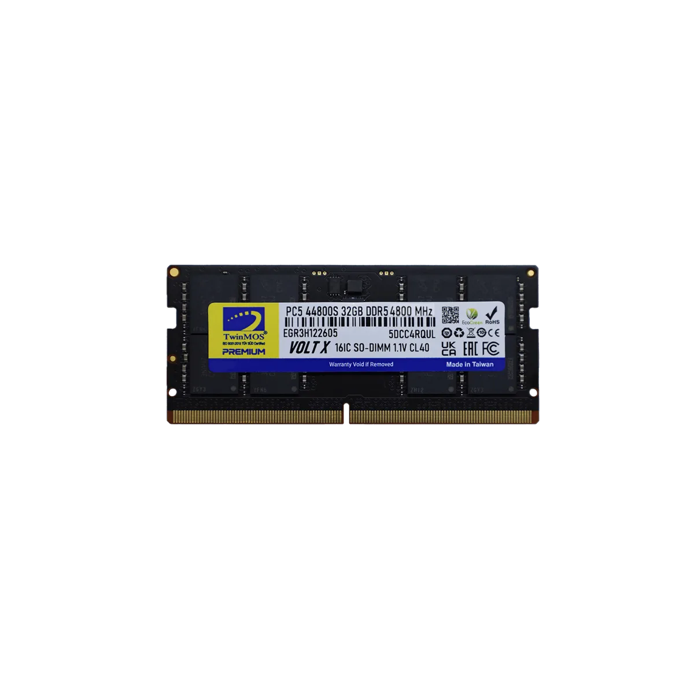

Search by laptop, desktop or motherboard — results verified in the TwinMOS test lab and vendor QVLs.
✓ Verified data only — “Not Verified” never means “Incompatible”.



Our support team will verify compatibility manually — usually within 48 hours.
Ask Support →